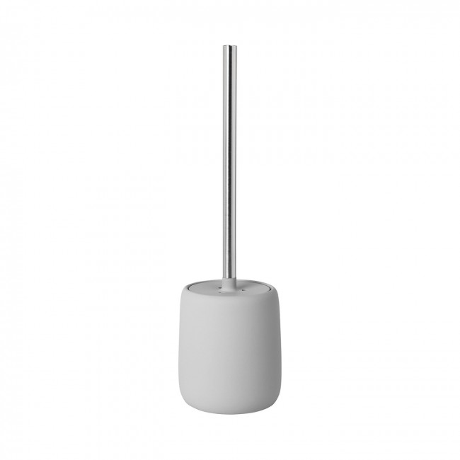
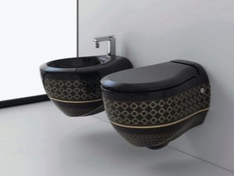
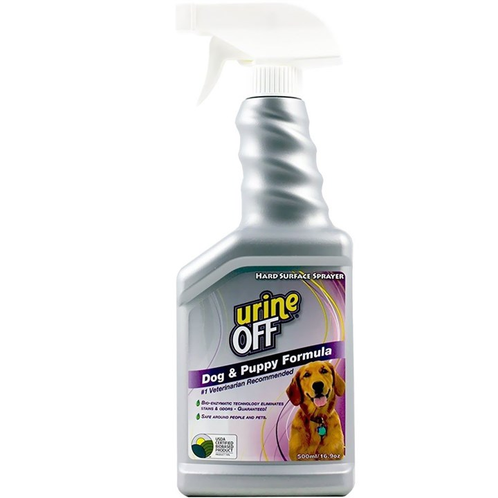

Kiek tualeto dubenys sveria? - Įranga 2020
2020.10.29 08:29

Asamblėja Įranga Kliringas Ryšys Siurbliai Vamzdžiai none Kaip tinkamai pakeisti kanalizacijos vamzdžius - nuo išardymo iki montavimo Polipropileninių vamzdžių diametrai: atitiktis nuo išorės iki vidaus Kaip naudotis bidet Padėklas gelžbetonio griovio (LK) kaina Asamblėja Įranga Kliringas Ryšys Siurbliai Vamzdžiai Pagrindinis Įranga
Kiek tualeto dubenys sveria?
Kiek tualeto dubenys sveria?
Manau, kad jis sveria tualetą su cisterna, manau, kad nuo dešimties iki penkiolikos svarų. Įdomu, koks šis klausimas? Aš niekada anksčiau jų nepaklausiau.
Tiesiog kitą dieną užsiima buto tualeto pakeitimu. Senas tualetas sveria apie 30 kilogramų. Jei norite jį vilkti, nors ir dviem etapais, šiukšlių konteineriams nebuvo taip smagu. Bet naujas mažas baltas tualetas sveria maždaug apie 20 kilogramų, todėl mano draugas ir aš lengvai velkė jį gabalus į butą. Kalbant apie svorį, man pakanka tik tai nustatyti, nes mano namuose turiu 20 svarų hantelius, kuriuos kartais keliauju. Beje, talpykloje buvo pritvirtintos papildomos dalys talpyklos tvirtinimui su tualetu, kurio svoris galėjo būti papildomas kilogramas. Nors talpykloje jie yra labai patogu nešti.
Standartinis ukinaz-keramikos rinkinys sveria nuo dvidešimt penkių iki trisdešimt kg, priklausomai nuo santechnikos gaminių, taip pat armatūros (gali būti plastiko arba metalo).
Klausimas turi daugybę atsakymų, nes nėra konkretaus tualeto dubenėlio modelio. Jei nenorite išstumti iš modelio, turėtumėte atkreipti dėmesį į medžiagos kokybę. Yra porcelianas, yra įprasta keramika. Labai priklauso nuo paties modelio dydžio, sienos storio. Sraigto talpa taip pat turi įtakos konstrukcijos svoriui. Priedai barelyje taip pat veikia svorį. Jei apskaičiuosite, tada vidutiniškai 20 kg.
nuo 12kg.i aukščiau nepaisant to, ką įmonė ir modeliai.
Kokie yra tualeto dydžiai?
Tualetas ir vonios kambarys yra neatskiriami šiuolaikinio žmogaus būsto elementai. Tačiau pirmasis ne visada būdingas didelis plotas, todėl butų savininkai turi būti protingi, kad įdėtų būtiną santechniką. Tačiau, net jei tualeto dydis leidžia, svarbu teisingai apskaičiuoti santechnikos ir kitų daiktų dydį, kad būtų sukurtas patogus vonios kambarys.
Kokie parametrai randami?
Šiuolaikinėje rinkoje galite rasti tualetų iš vietinių ir importuotų gamintojų. Pirmieji dydžiai atitinka GOST, jų standartiniai dydžiai priklauso nuo įrenginio tipo. Tačiau skirtumai nėra kritiški, o įrenginys, kurio parametrai yra 380x480x370-400 mm, laikomi patogiausiais.
Matmenys pagal dydį priklauso nuo trijų tipų:
mažas (ilgis ne didesnis kaip 54 cm); standartinis (ilgio matmenys skiriasi nuo 54 iki 60 cm); dideli (ilgis daugiau kaip 60 cm, maksimalus - 70 cm).Dideli įrenginiai turi įspūdingus matmenis. Paprastai juos pasirinko bendri vartotojai. Šiuo atžvilgiu svarbu ne tik tualeto indo dydis, bet ir jo gebėjimas atlaikyti svorį iki 500 kg.
Dažniausiai naudojami buitiniai prietaisai yra šie:
konstrukcija su lentyna (ilgis 605 mm, plotis 320-370 mm, aukštis - 340 mm); tualetas be lentyna (prietaiso ilgis yra 330-460 mm, plotis - nuo 300 iki 350 mm, aukštis 360 mm); vaikų modelis (su dubeniu ilgis 280-405 mm, plotis - 130-335 mm, aukštis - 210-290 mm).Negalima supainioti lentynos, esančios dubenyje, ir lentynos, ant kurios yra sumontuotas išleidimo bakas. Šiuo metu mes kalbame apie pastarąjį.
Importuotų prietaisų matmenys paprastai yra arti vidaus. Plotis gali siekti 360 mm, ilgis - 680 mm. Toliau brėžinyje galite matyti, kaip tualeto dydis ir dizainas skiriasi lentyna ir be lentyna.
Tuo pačiu metu būtina atskirti prietaisus nuo vientiso ir papildomo lentynos. Tualeto dubenėlio su papildoma lentyna montavimas suteikia papildomą pastato įrengimą.
Nurodytuose matmenyse neatsižvelgiama į papildomų įrenginių ir komponentų parametrus. Taigi, tualeto dubenėlio dydžiai su rezervuaru proporcingai padidėja rezervuaro sąskaita.
Statinio svoris priklauso nuo naudojamos medžiagos rūšies. Fajansiniai tualetai (labiausiai paplitusi alternatyva) sveria vidutiniškai 26-31,5 kg. Porceliano analogas turi mažesnį svorį - nuo 24,5 iki 29 kg.
Labiausiai tualeto dubenys pagaminti iš marmuro, kurių svoris svyruoja nuo 100 iki 150 kg. Tarp tualetų lengvo svorio - "nerūdijančio plieno" modeliai, kurių svoris 12-19 kg. Be to, jiems būdingas padidintas ilgaamžiškumas ir įrengiamos viešose vietose pramoninėse vietose. Lengviausias modelis yra plastikas, kurio vidutinis svoris yra 10,5 kg.
Pakabinami modeliai sveria mažiau nei grindų dydžio dydžiai, nes jiems trūksta "kojos".
Tualetinio dubenio svoriui taip pat turi įtakos rezervuaro svoris, o jo svoris priklauso nuo gamybos būdo ir tūrio. Standartinis 6 litrų keraminių bakų svoris yra 11 kg. Mažėjant tūriui, tankio svoris taip pat mažėja.
Šie skaičiai yra mažai svarbūs, įrengiant įrenginį nykstančiuose daugiaaukščiuose pastatuose, taip pat įrengiant privačiame namo aukšte antrame aukšte.
Modelio apžvalga
Skirtingų tipų tualetų dubenys turi įvairius matmenis. Vienas iš labiausiai ergonomiškų modelių yra įrenginys, rezervuaras ir dubuo, kurio forma sudaro vieną visumą. Tokio tualeto parametrus reglamentuoja GOST.
Jį galima įsigyti iš dviejų variantų:
"Kompaktiškas" su daugybe lentynos (matmenys 60,5x34x37 cm); analogas su atskira lentyna (jos matmenys 46x36x40 cm).Kitas modelis su kombinuota cisterna - monoblokas. Čia dubuo ir rezervuaras pagaminti iš vieno keramikos gabalėlio, kuris yra neatskiriamas dizainas. Ankstesnės versijos monobloko skirtumas yra tai, kad tarp dubens ir rezervuaro nėra jungiamųjų elementų.
Rusijos monoblokų gamyba reguliuojama GOST, todėl prietaisai turi tuos pačius parametrus. Plotis svyruoja tarp 36-37,5 cm, ilgis - 68,5-70 cm, aukštis 39-77,5 cm.
Mažiems tualetuose dažnai pasirenkami kampiniai tualetai. Jie gali būti grindų arba montuojami, jų charakteristika yra trikampio formos bakas. Vidutiniai dydžiai: plotis - 34-37 cm, ilgis - 72-79 cm, aukštis - 45-50 cm.
Lankstinis arba konsolinis tualetas leidžia vizualiai padidinti kambario erdvę, nors netinkamai tariant, kad jis yra daug mažesnis nei grindys. Tokioje tualetėje, atsižvelgiant į naudotoją, į sieną įtaisytas tik tualetas, o praplovimo mygtukas. Dubenys ir kiti ryšiai yra montuojami ant metalinio rėmo, vadinamo įrengimu, kuris yra paslėptas už klaidingo skydo. Pastarosios organizacija taip pat "maitina" naudingą tualeto plotą. Tačiau dėl integruoto dubenėlio erdvė po grindimis yra išlaisvinta, o visa struktūra atrodo mažesnė dėl to, kad akyse nėra akių. Sieninio pakabinamo tualeto parametrai skiriasi nuo skirtingų gamintojų. Vidutiniškai jų plotis 35-37 cm, ilgis - nuo 48 iki 58 cm, aukštis 42 cm.
Standartinių grindų tualetų matmenys yra 520x340 mm, kurių aukštis 400 mm. Amerikos ir Europos kolegos dažniausiai 7-10 cm ilgiau.
Be tualeto dydžio, taip pat svarbu atsižvelgti į išleidimo parametrų charakteristikas, nes atstumas tarp tualeto ir sienos priklauso nuo įrenginio, prijungto prie kanalizacijos sistemos, tipo. Labiausiai kompaktiškas tualetas bus su įstriža. Kanalizacijos vamzdis, kuris atsiranda iš sienos, gali būti "sukonstruotas" iki reikiamų parametrų, naudojant vamzdžius ar kampinius elementus. Labiausiai "kaprizingi" laikomi įrenginiai su tiesioginiu išleidimu, nes sistema reikalauja montuoti prie grindų arba, tiksliau, iš jo išeinančio vamzdžio. Maksimali, kuri gali būti sukurta tokioje sistemoje, yra struktūros pasislinkimas ašies kryptimi vienoje ar kitoje.
Apskaičiuodamas praplovimo bako tūrį, reikia sutelkti dėmesį į tai, kad per vieną kelionę į tualetą suvartojama 13 litrų vandens. Paprastai tai yra standartinis bako kiekis. Galite sumažinti vandens suvartojimą įrengdami dvigubą drenažo sistemą ir padaliję baką į 2 6 ir 3 litrų talpos kampus. Įdiegus tokį prietaisą vidutiniškai sutaupoma iki 6000 litrų vandens per metus.
Yra 4 tipo montavimo kanalo:
monoblokas (tarp dubens ir rezervuaro nėra ryšio); kompaktiška versija (talpykla ant tualeto dubenėlio); paslėpta (įdiegta įrenginiuose); sustabdytas.Pastarasis gali būti montuojamas aukštai virš tualeto (apie 150 cm nuo grindų), žemas (iki 50 cm) arba aukščio viduryje nuo grindų (nuo 50 iki 100 cm). Tualeto ir rezervuaro prijungimas atliekamas naudojant specialų vamzdį.
Be tualeto matmenų, priedai ir priedai taip pat turi įtakos jo užimamoje erdvėje. Taigi, pritvirtintų ir sienų modelių organizacijoje reikia įrengti montavimą. Jo matmenys priklauso nuo tualeto matmenų ir gali būti skirtingi. Standartas yra 50 cm pločio ir 112 cm aukščio rėmai.
Didelės vertės yra montuojant gofruoto vamzdžio konstrukcinius matmenis. Jo paskirtis - vandens nukreipimas iš tualeto. Jis pagamintas iš kieto ar minkšto plastiko. Jei įrenginio rankogalio ilgis mažesnis nei 130 mm, gobelenų ilgis turėtų būti 200-1200 mm. Skersmuo - atitinkamas tualeto modelis, kuriam toks nutekėjimas yra nustatytas.
Kitas svarbus elementas yra rankovė, jungianti tualetą ir kanalizaciją. Jis turėtų tilpti į išorinį įrenginio laidą. Kalbant apie ilgį, rankogaliai yra ilgi ir trumpi (112-130 mm).
Netipiškas atvejis
Atipiniai atvejai paprastai apima prietaisus didelėms ar mažoms patalpoms, taip pat neįgaliesiems pritaikytus įrenginius. Erdvioje vonios kambaryje rekomenduojama pasirinkti bendrą (didelį) tualetus ir įtaisus su įmontuotais bide, smulkiems - kampiniams arba vaikų sanitariniams įrenginiams.
Tarp tualetų paprastų dydžių - vaikams. Pažymėtina, kad jis gali būti naudojamas ne tik vaikų įstaigose ar šeimose su vaikais - toks įtaisas gali būti įrengtas mažuose tualetuose suaugusiesiems. Reikalinga sąlyga - visas kambarys turi būti minimalizmo stiliaus, kitaip nėra nenuoseklumo.
Vietos vaikų tualetinių dubenių dydžiai pagal GOST yra 29x40.5x33.5 cm. Analogai užsienio gamybos yra šiek tiek didesni - plotis gali padidėti iki 35 cm, ilgis - iki 59 cm.
Tualetai su bidė taip pat turi skirtingus parametrus iš kitų prietaisų. Paprastai jie yra prailgę, nes ant jų yra montuojama purkštuvų skalbimo sistema. Tokio tualeto dubenėlių talpykla taip pat gali turėti didelį kiekį. Grindų tualetas su bidė paprastai yra 700 mm ilgio ir 410 mm pločio. Pakabinamoji konstrukcija pasižymi šiais parametrais - 485x365 mm.
Ypatingą dėmesį reikėtų skirti tualetams žmonėms su negalia. Tai gali būti pagal užsakymą pagaminti prietaisai arba standartiniai tualetiniai dubenys, turintys turėklai, speciali sėdynė ir pan. Tokie dizainai skiriasi aukščio - jie turėtų būti 10-20 cm virš standartinių tualeto dubenėlių. Jei asmuo juda į neįgalų vežimėlį, tada tualeto dubenėlio aukštis turi būti identiškas neįgaliųjų vežimėlio aukščiui, paprastai 50 cm. Paprastai tualeto sėdynės aukštis neįgaliesiems yra 50-60 cm. žmonės, atsinaujinimo laikotarpiu po operacijos ar sunkių sužalojimų.
Jei negalite įdiegti specialaus tualeto, galite įsigyti pamušalo. Tai yra sėdynės, pritvirtintos prie bet kurio tualeto ir didinančios jo aukštį. Ant dangtelių yra turėklų. Beje, pastarasis gali būti montuojamas ant sienos arba montuojamas tiesiai prie tualeto.
Kaip apskaičiuoti?
Pirmiausia reikia nustatyti tualeto įrengimo vietą ir apskaičiuoti, ar ji tilps į tualetą. Reikėtų nepamiršti, kad kiekvienoje įrenginio pusėje turi likti bent 25-30 cm laisvos vietos. Minimalus atstumas nuo prietaiso iki durų ar priešingos sienos yra 70 cm.
Be to, turite paaiškinti atstumą nuo sienos iki kanalizacijos vamzdžio centro. Jis neturėtų būti didelis, kitaip jums reikės įdiegti didelę jungiamąją žarną. Tačiau minimalus atstumas yra nepatogus - vamzdis netrukdys įrengti. Šis parametras rodo, kiek tualetas bus nukreiptas nuo sienos.
Konstrukcijoms su horizontaliu išleidimu kanalizacijos sistema įterpiama 18 cm atstumu nuo grindų, jei įtaisai yra pasvirę, nuo 20 cm.
Įrengdami tualetinį dubenį su įmontuotu talpyklu arba pakabinimo įtaisu, apskaičiavimuose turite nurodyti montavimo matmenis ir klaidingas sienas.
Galima sužinoti apytikslius tualeto indo matmenis, kurių naudojimas bus patogus tam tikrame kambaryje, matuojant kambario gylį ir padalinant jį į 2. Gautas skaičius bus apytikslis prietaiso ilgis. Priešingu atveju ji nustato likusį tualetą.
Didesniems kambariams reikėtų pasirinkti dideles dubenis, galbūt turėtų būti pasirinkti įrenginiai, kurie derinami su bidė. Mažiems tualetams rekomenduojami kompaktiški grindų arba pakabinamojo tipo modeliai, taip pat kampų konstrukcijos su montavimu.
Rekomenduojama pasirinkti tokį prietaisą, kuris būtų patogus daugumai erdvinių ar aukštų šeimos narių. Statinio aukštis turėtų būti patogus sėdinčiam žmogui. Jis neturėtų patirti įtampų jo kojose, turėdamas galimybę visiškai nuleisti pėdą iki grindų. Kalbant apie plotį, jis turi būti "teisingas". Kai tualeto indas yra per siauras, begalis "supjaustomas" į kojas, platus kraujo apytakos kojose užspaudimas.
Renkantis tualetą vaikui, reikia atsiminti, kad jis sparčiai auga. Atsižvelgiant į tai, vaiko matmenims pasirinkto prietaiso dydis turėtų būti padidintas 20%. Tai leis dažniau pakeisti tualetą.
Vaikams skirtos atskiros įrangos montavimas yra patartina, jei tualetas yra pakankamai vietos. Priešingu atveju protingiau įdiegti vieną tualetą, o vaikams - įsigyti specialią padą.
Diegimo rekomendacijos
Tualeto dubenėlio montavimas yra palyginti paprastas procesas, daugeliu atvejų toks darbas nereikalauja specialistų įtraukimo. Instrukcija, kuri būtinai pridedama prie kiekvieno įrenginio, labai supaprastina klausimą.
Visų pirma reikia išardyti seną tualetą, iš anksto užblokuoti vandenį ir išleisti vandenį iš dubens. Prireikus atsukite montavimo varžtus, jei reikia, atleiskite dubenį nuo grindų ir kanalizacijos vamzdžio.
Kitas žingsnis - suteikti plokščią ir lygią grindų paviršių naujam įrenginiui įrengti. Nors pagrindas ruošiamas ir džiūsta (pvz., Praplaunant grindis arba lyginant jį su cemento skiediniu), reikia surinkti tualetą. Tada turėtumėte padaryti reikiamą žymėjimą. Patogiau padaryti reikiamus ženklus grindyse, padėdami dubenį ant paruoštos pagrindo ir pažymėdami tvirtinimo taškus pieštuku (ant tualeto "koja" yra specialios perforacijos, per kurias galite piešti taškus ant grindų pieštuku).
Tualetinis dubuo prijungiamas prie kanalizacijos sistemos, naudojant rūsius, talpykla prijungta prie šalto vandens tiekimo vamzdžio su lanksčia žarna. Pastaroji yra tiekiama į rezervuarą iš apačios arba iš šono.
Po to, kai tualetas yra sumontuotas, visas sandūras reikia sandarinti silikoniniu sandarikliu ir uždengti sandarinimo laiką. Po to jūs turite kontroliuoti įrangos naudojimą (keletą kartų išvalykite vandenį) ir patikrinkite, ar sistema teisinga. Jei viskas yra tinkama, galite tvirtinti sėdynę.
Paslėpto bako įrengimas prasideda montuojant įrenginį, kuriame sumontuotas bakas. Be to, darbo etapai yra identiški aprašytuose aukščiau, procesas baigiamas patikrinant darbo teisingumą ir tolesnį melagingos sienos montavimą ir apdailą.
Kitu vaizdo įrašu galite vizualiai sužinoti, kaip tualetą įdėti savo rankomis.
Koks yra tualeto dydis su cisterna ir kaip pasirinkti geriausią?
Nepriklausoma šiuolaikinio namo dalis yra sanitarinis vienetas. Vonios, plautuvės, dušai, bidė, tualetas seniai susipažino su reikalingais buities daiktais.
Dažnai tualeto patalpos plotas neleidžia montuoti santechnikos, neatsižvelgiant į jo dydį ir plotą. Taip, ir dideliam naujų privačių namų tualetui, taip pat reikia atsižvelgti į visų sumontuotų santechnikos įrenginių matmenis, siekiant susieti visas detales su tualeto interjeru viename dizainerio ansamblyje, gražus ir patogus.
Standartiniai matmenys
Tualeto dubenėlių dydžiai su rezervuaru gali būti labai skirtingi ir labai paveikti jūsų tualeto dizainą ir komfortą.
Tualetai kompaktiški
Nepaisant neseniai atsiradusių sanitarinių prietaisų formų ir dizaino įvairovės, rusai labiau linkę įrengti kompaktiškus tualetus savo namuose. Iš to paties pavadinimo matyti, kad kompaktiškas objektas neužima daug vietos. Ir tai labai svarbu mažų butų savininkams.
Be to, "kompaktiškas" yra lengva įdiegti patalpose be iš esmės pakenkti vonios grindims ar sienoms. Tokiu "kompaktišku" bakas ir dubuo sulankstyti kartu. Tai daug patogiau ir labiau estetiškai, nei uždėti dubenį prie grindų, o talpyklą - prie sienos, jungiant juos su vamzdžiu ar žarnomis. Sužinokite, kaip įdiegti tualetą savo rankomis iš šios medžiagos.
Visų tipų tualetinių dubenų matmenys yra reguliuojami 1996 m. Gosstandarto numeriu 30493. Rusijoje "kompaktiškas" yra dviejų tipų: su atskira lentyna ir su dauguma. "Kompaktiškas" dydis su daugybe lentynos yra 60,5x34x37, o atskiras - 46x36x40.
Matmenys yra centimetrais, aukštis - ilgis - plotis. Užsienio gamintojai gamina produktus, kurie nesutampa su matmenimis pagal GOST Rusijos Federacijos pagal vieną ar kelis parametrus. Kai kurie Rusijos gamintojai taip pat siūlo "didelės apimties", todėl, pirkdami, turite atidžiai išnagrinėti visus dydžius.
Monoblokas
Tokie tualetiniai dubenys skiriasi nuo "kompaktiško" tipo, nes dubuo ir skalavimo talpykla yra pagaminti iš vienos keramikos dalies. Ši konstrukcija užtikrina ilgaamžiškumą ir stiprumą. Trūksta jungčių tarp bako ir dubens, o tai taip pat daro įtaką ilgalaikiam "monobloko" veikimui be remonto.
Bendros šio tipo santechnikos prietaisų vertės iš skirtingų gamintojų skiriasi. Tai dažniausiai reiškia gamintojus iš užsienio, nes Rusijoje visus dydžius tualeto dubenis reglamentuoja GOST Nr. 30493-96.
Atsižvelgiant į standartų skirtumų, Rusijos rinkoje galite įsigyti "monobloką", kurio matmenys yra 36-37,5 cm pločio, 68,5-70 cm ilgio (gylis) ir 39-77,5 cm aukščio.
Kampas
Paprastai juos parenka tie, kurie nori sutaupyti vietos ir mėgstami originalių dizaino sprendimų. Įstatykite tokį higieninį dizainą kampu, kurį galima padaryti pagal konteinerio trikampę formą.
Bendrieji parametrai apskaičiuojami pagal kampo, kuriame vandentiekis bus sumontuotas, kampų ilgis. Pats patiekalas turi įprastus matmenis, patogus suaugusiesiems: 34-37 cm pločio, 72-79 cm ilgio (gylis) ir 37-43 cm aukščio. Vienintelis kampo modelio trūkumas yra keletas sunkumų diegimo metu.
Kūdikis
Vaikų santechnikos įranga įrengiama ne tik vaikų vonios kambariuose, bet ir tuose tualetuose, kur, remiantis dizainerio planu, turi būti minimalizmas. Miniatiūriniai tualetiniai dubenys, bidė, praustuvai tinka tiek vaikams, tiek suaugusiesiems, turintiems mažą kūną.
Vaikų tualeto dubenių matmenys pagal tą patį 1996 m. GOST Nr. 30493 yra 29 cm pločio, 40,5 cm ilgio ir 33,5 cm aukščio. Užsienio gamintojams šie parametrai gali svyruoti nuo 29 iki 35 cm pločio, nuo 46 iki 59 cm ilgio (gylis) ir nuo 26 iki 33,5 cm aukščio.
Hinged
Tarp pirkėjų tampa vis populiaresni tualetai su tuščiavidurėmis cisternomis. Ši konstrukcija turi keletą neginčytinų pranašumų. Pirma, vandens rezervuaras kambaryje neužima vietos, o tualeto indą galima montuoti arti sienos arba už jo.
Antra, dėl pačios sienos triukšmo izoliacijos, vandens ir jo rinkinio išleidimas yra daug tylesnis nei iš bake įrengto bako. Be to, visi vamzdžiai taip pat yra paslėpti pačioje sienoje arba už specialaus klaidingo skydo, kuris teigiamai veikia tualeto estetiką.
Skaitykite daugiau apie sieninį tualetą ir kaip jį įdiegti šiame straipsnyje.
Tualetinių dubenų parametrai su įtaisytomis cisternomis taip pat skiriasi priklausomai nuo kilmės šalies. Daugeliu atvejų šių modelių plotis bus 35-37 cm, ilgis (gylis) - 47-58 cm, o aukštis - 39-42 cm.
Matavimų ypatybės
Perkant santechniką, reikia tęsti ne tik iš tualeto patalpų dydžio ir norimo tualeto dydžio, bet ir atsižvelgti į išleidimo vietos charakteristikas ir dydį. Tarpas tarp tualeto ir kambario sienų priklauso nuo sanitarinės įrangos prijungimo prie kanalizacijos sistemos tipo.
Ypač įnoringas šiuo atveju, prietaisas su žemesnio tipo išleidimo. Jų negalima pakartoti su minimaliais nuostoliais sienų ir grindų apdailoje. Bus reikalinga rimta rekonstrukcija. Todėl, perkant tualetinį dubenį, būtina atsižvelgti ne tik į jo dydį pagal kontūras, bet ir į tai, kiek vietos užims visiškai surinkta forma.
Iš mūsų svetainės medžiagų taip pat galite sužinoti, kuris tualetas geriau pasirinkti, atsižvelgiant į kitus parametrus - gamybos medžiagą, konstrukcijos tipą ir tt
Apytikslis svoris priklausomai nuo gamybinės medžiagos
Svorio sanitarinės konstrukcijos tiesiogiai priklauso nuo medžiagos, iš kurios ji pagaminta. Pati kūnas, kanalizacijos mechanizmas - visa tai svarbu. Paprastai santechnikos įrenginiai yra pagaminti iš santechnikos ir santechnikos įrenginių. Fajansas yra sunkesnis nei porcelianas, todėl iš jo pagamintas tualetas sveria apie 26-31,5 kg. Porcelianas bus šiek tiek lengvesnis: 24,5-29 kg.
Be to, yra mėginių iš marmuro, plastiko ir nerūdijančio plieno. Marmuras - sunkiausia. Jie sveria nuo 100 iki 150 kg. Nerūdijančio plieno konstrukcija yra lengva ir patvari. Jų svoris yra nuo 12 iki 19 kg. Ir vis dėlto jie nėra įtrūkimų ir lustai. Tokie įtaisai yra gerai įrengti negyvenamose vietovėse su dideliais žmonėmis.
Paprasčiausias tualeto dubuo yra plastikas. Bet kurio parametro iš plastiko produktas sveria ne daugiau kaip 10,5 kg. Tačiau santechnikos prietaiso svoris daro poveikį ne tik medžiagai, iš kurios ji pagaminta.
Dažnai, renkantis lengviausią dubenėlį, pirkėjas neatsižvelgia į rezervuaro svorį. Bet bendra konstrukcijos masė taip pat priklauso nuo jo tūrio ir medžiagos, iš kurios susidaro drenažo mechanizmas. Standartinis šešių litrų bakas sveria apie 11 kg. Atitinkamai mažesne apimtimi taip pat sumažės viso produkto svoris.
Pakabinami modeliai sveria mažiau grindų dėl to, kad jų gamyboje buvo mažiau medžiagų: galų gale jie neturi kojų. Taigi, tualeto svoris gali svyruoti nuo 5 iki 150 kg.
Reikalaujamo tūpalo bako tūrio skaičiavimas
Skirtingų gamintojų nutekėjimo rezervuarai ir skirtingi tualeto dubenų modeliai turi skirtingą tūrį. Taigi, vietinės produkcijos produktams paprastai yra nuo 4 iki 13 litrų. Importuojamose tualeto induose įrengti nuo 4 iki 6 litrų talpos išleidimo įrenginiai.
Vanduo nusausinamas nutekėjimo mechanizmu arba vadinamuoju išleidimo vožtuvu. Nepriklausomai nuo ištuštinimo bako talpos, šie vožtuvai gali būti sukonstruoti taip, kad išleistų tam tikrą vandens kiekį. Manoma, kad "dideliam" prapūtimui reikia 3,5-4 litro vandens, o "mažam" - 1,5 litro.
Yra modelių, kur prietaiso nutekėjimo mechanizmas turi du mygtukus, reguliuojančius vandens srautą. Be to, netgi yra santechnikos įrenginių su dviem dubenėliais ir atitinkamai skirtingais slyvais. Kietosioms ir skystoms atliekoms yra atskiras bakas ir jo pačių kanalizacija su būtinu vandens srautu.
Dviejų režimų talpos su 3 ir 6 litrų išleidimu (atitinkamai skystoms ir kietosioms atliekoms) gali sutaupyti iki 6 500 litrų vandens vienam asmeniui per metus, palyginti su senojo modelio, kuriame vienkartinis viso tūrio išleidimas yra 10-13 litrų.
Taigi, trijų žmonių šeima per metus gali sutaupyti iki 20 000 litrų, jei jie savo dėžėse įrengia drenažo įrenginį su dviem būdais.
Taip pat, pasirinkdami išleidimo baką, turite apsvarstyti vandens išleidimo tipą. Šiuo metu yra trijų tipų: vertikalios, horizontalios ir įstrižainės. Nauji namai yra suprojektuoti horizontaliai arba įstrižai, taip pat statomi šalies kotedžai. Vertikalus išleidimas būdingas seniems vienam ir daugiaaukščiams pastatams.
Taigi, kaip pasirinkti tinkamą tualetą su visomis formų, dydžių, dizaino ir dizaino įvairove? Be tualeto ploto ir komunikacijos tipo namuose, jums taip pat reikia prisiminti, kad vandentiekis buvo patogus.
Todėl, renkantis vieną iš pagrindinių namų elementų, būkite atsargus, ar jo šeima tinka visiems šeimos nariams. Nebijokite net susėsti ir sėdėti ant jo. Tinkamas pasirinkimas užtikrina, kad jūsų tualetas bus tikrai "su visais patogumais"!
Kiek tualeto dubenys sveria?
Klausimas turi daugybę atsakymų, nes nėra konkretaus tualeto dubenėlio modelio. Jei nenorite išstumti iš modelio, turėtumėte atkreipti dėmesį į medžiagos kokybę. Yra porcelianas, yra įprasta keramika. Labai priklauso nuo paties modelio dydžio, sienos storio. Sraigto talpa taip pat turi įtakos konstrukcijos svoriui. Priedai barelyje taip pat veikia svorį. Jei apskaičiuosite, tada vidutiniškai 20 kg.
Tiesiog kitą dieną užsiima buto tualeto pakeitimu. Senas tualetas sveria apie 30 kilogramų. Jei norite jį vilkti, nors ir dviem etapais, šiukšlių konteineriams nebuvo taip smagu. Bet naujas mažas baltas tualetas sveria maždaug apie 20 kilogramų, todėl mano draugas ir aš lengvai velkė jį gabalus į butą. Kalbant apie svorį, man pakanka tik tai nustatyti, nes mano namuose turiu 20 svarų hantelius, kuriuos kartais keliauju. Beje, talpykloje buvo pritvirtintos papildomos dalys talpyklos tvirtinimui su tualetu, kurio svoris galėjo būti papildomas kilogramas. Nors talpykloje jie yra labai patogu nešti.
Tualetai, cisternos, bidė, pisuarai, 2 dalis
Tualeto dubenėlis kompaktiškas "Dora" TU 4960-022-54672351-2005, GOST 15167-93
Bendra informacija
GOST, TU TU 4960-022-54672351-2005, GOST 15167-93
Gamintojai UAB "Statybinių medžiagų ir buitinių prietaisų asociacija"
OKP kodas 496500
Tualeto techninės charakteristikos Išleidimo skersmuo, mm: vidinis - 78, išorinis - 94. Vandens tiekimo angos diametras, mm: vidinis - 63, išorinis - 88. Vandens sandariklio aukštis, mm - 60. Mechaninis stipris, kN - ne mažesnis kaip 1. Problema - įstrižai. Grynasis svoris, kg - 17,1. Bendras svoris, kg - 18,9
Aprašymas Ji yra perforuota apskrito skalbimo. Vandens sugertis ne daugiau kaip 1%. Padengta chemiškai ir termiškai atsparia glazūra.
Taikymo įranga vonios ir tualetai
Tualeto dubenėlis kompaktiškas "Elmira" TU 4960-022-54672351-2005, GOST 15167-93
Bendra informacija
GOST, TU TU 4960-022-54672351-2005, GOST 15167-93
Gamintojai UAB "Statybinių medžiagų ir buitinių prietaisų asociacija"
OKP kodas 496500
Tualeto techninės charakteristikos Išleidimo skersmuo, mm: vidinis - 78, išorinis - 94. Vandens tiekimo angos diametras, mm: vidinis - 62,5, išorinis - 88. Vandens tarpo aukštis, mm - 60. Mechaninis stipris, kN - ne mažiau kaip 2 Problema - įstrižai. Neto svoris, kg - 17,4. Bendras svoris, kg - 19.1
Aprašymas Ji yra perforuota apskrito skalbimo. Vandens sugertis ne daugiau kaip 1%. Padengta chemiškai ir termiškai atsparia glazūra.
Taikymo įranga vonios ir tualetai
Tualeto dubenėlis kompaktiškas "Elissa" TU 4960-022-54672351-2005, GOST 15167-93
Bendra informacija
GOST, TU TU 4960-022-54672351-2005, GOST 15167-93
Gamintojai UAB "Statybinių medžiagų ir buitinių prietaisų asociacija"
OKP kodas 496500
Tualeto techninės charakteristikos Išleidimo skersmuo, mm: vidinis - 78, išorinis - 94. Vandens tiekimo angos diametras, mm: vidinis - 62,5, išorinis - 88. Vandens tarpo aukštis, mm - 60. Mechaninis stipris, kN - ne mažiau kaip 2 Problema - įstrižai. Neto svoris, kg - 17,4. Bendras svoris, kg - 19.1
Aprašymas Ji yra perforuota apskrito skalbimo. Vandens sugertis ne daugiau kaip 1%. Padengta chemiškai ir termiškai atsparia glazūra.
Taikymo įranga vonios ir tualetai
Tualeto dubenėlis kompaktiškas "Elegantiškas" GOST 15167-93 GOST 15167-93
Bendra informacija
GOST, TU GOST 15167-93
Ilgis, 640 mm
Plotis, mm 340
Aukštis 780 mm
Svoris 26 kg
Gamintojai UAB "Kirovo keramika"
OKP kodas 496518
Taikymo įranga vonios ir tualetai
Tualeto dubenėlis kompaktiškas "Stilius" GOST 15167-93
Bendra informacija
GOST, TU GOST 15167-93
Ilgis, 635 mm
Plotis, mm 340
Aukštis, mm 820
Svoris 28 kg
Gamintojai UAB "Kirovo keramika"
OKP kodas 496518
Taikymo įranga vonios ir tualetai
Tualeto dubenėlis kompaktiškas "Euro" GOST 15167-93
Bendra informacija
GOST, TU GOST 15167-93
Ilgis, 630 mm
Plotis, mm 360
Aukštis, 775 mm
Svoris, kg 27
Gamintojai UAB "Kirovo keramika"
OKP kodas 496518
Taikymo įranga vonios ir tualetai
Tualeto dubenėlis kompaktiškas "Galant" GOST 15167-93
Bendra informacija
GOST, TU GOST 15167-93
Ilgis, mm 605
Plotis 370 mm
Aukštis 770 mm
Svoris 26 kg
Gamintojai UAB "Kirovo keramika"
OKP kodas 496518
Taikymo įranga vonios ir tualetai
Tualetinis dubenėlis kompaktiškas "Vorotynsky-comfort" GOST 15167-93
Bendra informacija
GOST, TU GOST 15167-93
Gamintojai UAB "UgraKeram"
OKP kodas 496513
Taikymo įranga vonios ir tualetai
Kompaktiškas tualeto svoris
Tualeto dubenėlio svoris, o ne tik tualeto dubuo, bet ir viskas pasaulyje, daugiausia priklauso nuo medžiagos, iš kurios ji pagaminta.
Tualetas gali būti pagamintas iš beveik bet kokios medžiagos. Tai netgi gali būti auksas. Tačiau, atsižvelgiant į aukso kainą, geriau nevesk apie tokio produkto svorį.
Iš esmės, tualeto indai yra pagaminti iš sanitarinio porceliano ir keramikos. Iš porceliano tualeto dubenėlio sveria nuo 25 iki 28 kg. Faizinis tualetinis dubuo pasveria šiek tiek daugiau - 27-31 kg.
Tualeto svoris iš kitų medžiagų:
Marmuro tualetas sveria nepalyginamai daugiau. Tualetinio dubenio svoris iš marmuro gali siekti 15 kg.
Ilgalaikio nerūdijančio plieno tualetai svyruoja nuo 13 iki 20 kg.
Lengviausia iš visų tualeto indų gamyboje naudojamų medžiagų yra plastikas. Tualetas, pagamintas iš šios medžiagos, sveria ne daugiau kaip 10 kg.
Kas veikia tualeto svorį:
Tualeto dubenų svoris gali skirtis. Standartinių dydžių tualeto dubenys (apskaičiuotas 6 l vandens) - sveria apie 10-12 kg. Jei bakas yra mažesnis, atitinkamai sumažėja viso produkto svoris. Medinių padėklų veislės ant tualeto dubenėlių žymiai sumažins svorį (iki 10 kg).
Prieš tai mes galvojome apie grindų tualetų modelius, ty tuos, kurie turi pėdą ir yra pritvirtinti prie grindų. O kas, jei tualeto dubenys ir kojos nėra? Tai taip pat labai veikia tualeto dubenėlio svorį.
Taigi, atsakyti į klausimą "kiek tualetas sveria" praktiškai neįmanoma, nes tualeto indo svoris gali būti nuo 5 iki 150 kilogramų.
Tualeto ir jo prietaiso lentelės dydis. Matmenys grindų, pakabinamų, kampų, didelių ir mažų santechnikos.
Turinys:
Be abejo, planuojant vonios kambarį, tualetas yra pagrindinis vaidmuo. Tinkamas santechnikos pasirinkimas padeda ne tik išsaugoti kambario vidinę erdvę, bet ir užtikrina komfortą atliekant higienos procedūras. Modernioje santechnikos įrangos rinkoje galite rasti įvairių formų, dydžių ir montavimo būdų tualetus.
Anksčiau mes aptarėme čia esančių vonių tipus ir dydžius, čia pateikiamus kriauklių tipus ir matmenis, pagrindinius dušo elementus, taip pat vonios plytelių formą ir matmenis šiame straipsnyje.
Įrenginys ir klasifikacija
Išleidimo vamzdžio išleidimo sistemos forma
Yra šie vamzdžių tipai:
Obliuota (kampinė) arba "išleisti į sieną"
Tiesus arba horizontalus
Vertikaliai arba "išleidimas į grindis"
Tipo (formos) dubuo
Santechnikos įrenginiai su piltuvo formos, vainiko ir indo formos dubeniu laikomi standartiniais (žr. Paveikslą). Dėžutės formos versija gali būti laikoma pasenusi, nepaisant retos, bet vis tiek buvimo aparatinės įrangos parduotuvėse. Piltuvėlis ir skydelis turi savo privalumus ir trūkumus. Viena forma yra gera visiems, tačiau ji labai squirts, kitoje beveik nėra purškimo, bet dažniau reikia šepetėlio, o didesnis triukšmo lygis yra tada, kai vanduo yra nusausintas.
Supilkite baką
Santechnika taip pat yra padalinta iš montavimo metodo. Grindų ir sienų tualetinių dubenų žanro klasika, kurią galima pritaikyti kampinėje ir sienoje. Tokios veislės susipainiojimas yra gana paprastas, todėl apsvarstykite standartinius matmenis, kuriuos galite pasirinkti, pasirinkdami santechniką.
Ar tu žinai?
Pasirinkite savo dydį
Standartiniai grindų tualeto matmenys
Jei mes kalbame apie standartinį tualeto dydį, vietiniai gamintojai bando laikytis šių dydžių:
Svarbu suprasti, kad tai yra "plikas" matmenys, be papildomų priedų. Atsižvelgiant į tai, kad daugeliu atvejų tualetas ateina su cisterna, proporcingai didėja bendrieji matmenys. Verta paminėti, kad rezervuaro aukštis gali skirtis priklausomai nuo kilmės šalies. Pavyzdžiui, priimtini Europos standartai yra atitinkamai 680 * 360 * 400 gylis (ilgis), plotis ir aukštis išilgai tualeto dubenyslo krašto.
Pakabinamos santechnikos priemonės
Pastaruoju metu tokie santechnikos modeliai vis labiau populiarėja. Įrengtų tualeto dubenių privalumai yra tai, kad akių kontūro kabina slysta sienoje, atitinkamai, netrukdomas vonios kambario dizainas. Be to, atverčiamasis dizainas vizualiai išplečia vidinę erdvę. Verta paminėti, kad tokie modeliai yra labai atsparūs statinėms apkrovoms ir gali atlaikyti iki 400 kg. Kai kurie gamintojai teikia dvigubą saugumo ribą (iki 800 kg).
Reikėtų pažymėti, kad sumontuoto tualeto įrengimas žymiai supaprastina valymą.
Prikabinamas vandentiekis komplektuojamas su montavimu - speciali montavimo struktūra, kurios matmenys nurodyti toliau esančiame straipsnyje.
Kampiniai sanitarinės keramikos gaminiai
Tokie modeliai dažnai įrengiami mažuose gyvenamuosiuose pastatuose ir pramoniniuose pastatuose. Dėl kampinio įrengimo tualetas ne tik sutaupo vidinę erdvę, bet ir iš dalies slėpia inžinerinius ryšius. Tokiems modeliams svarbūs šie dydžiai:
Aukštis: 37 - 43 cm
Gylis 72,5 - 79 cm
Plotis: 34,5 - 37,5 cm
Renkantis dydį, turite atsižvelgti į kampo plotį.
Integruotų tualetų matmenys
Tokiems modeliams būdinga paslėpta skalavimo bako instaliacija. Šis elementas paslėptas klaidingu skydeliu arba įdėtas į sieną. Dėl įrengimo savybių, įmontuota tualetai veikia beveik be triukšmo.
Renkantis santechniką galima vadovautis šiais parametrais:
Aukštis: 39 - 42 cm
Gylis: 47 - 58 cm
Plotis: 35,5 - 37 cm
Reikėtų pažymėti, kad įmontuota tualetai yra rasta grindų ir pakabinamos versijos rinkoje.
Montavimas - Specializuota tvirtinimo detalė
Rėmas Gylis: 135 - 300, aukštis - 800 - 1 400, plotis - 500 - 600 mm.
Blokuoti. Gylis: 100-150, aukštis - iki 1 000, plotis - 500 - 600 mm.
WC - bidė: du viename
Santechnikos įranga, derindama tualeto ir bidės funkcijas, yra beveik neįmanoma rasti standartiniuose apartamentuose: tai retas svečias vidaus rinkoje. Tačiau tokie modeliai yra labai patogu naudoti, todėl yra plačiai naudojami kotedžai ir apartamentai, pastatyti pagal individualius projektus. Paprastai bidė tualetai skiriasi nuo standartinių produktų didesniais matmenimis ir padidintu skalavimo bako tūristu.
Bendras tokių produktų matmuo gali būti toks:
Grindų montavimas: 700/410/785 (ilgis / plotis / aukštis). Ant tualeto krašto - 390 mm.
Pakabinamas (paslėptas įrengimas): 485/355/315 (ilgis / plotis / aukštis).
Daugumoje bidetinių tualeto modelių yra vandens slėgio reguliatoriai ir termostatai.
Dideli tualetai
Šie produktai skirti žmonėms, turintiems antsvorį. Dideli tualetai skiriasi nuo standartinių modelių ir gali būti pagaminti pagal individualius užsakymus. Standartiniai matmenys yra šie parametrai:
Aukštis - 65 cm
Gylis - 70 cm
Plotis - 40 cm
Tokių tualetinių dubenų dizainas paprastai yra sutvirtintas, todėl jis gali atlaikyti apkrovas iki 500 kg.
Dauguma kompaktinių tualetų
Jei kalbėsime apie nestandartinius dydžius, tikslinga atsižvelgti į mažų produktų parametrus. Siaurieji, maži tualetiniai dubenys idealiai tinka montuoti nedidelio ploto vonios kambariuose. Čia galite sutelkti dėmesį į šiuos dydžius:
Plotis - nuo 33 cm
Gylis - nuo 59 cm
Aukštis - nuo 47 cm (su rezervuaru)
Tarp mažo dydžio vandentiekio tualeto sėdynės yra ypač populiarios, jų dydis yra 35 * 63 * 77 cm, tačiau čia viskas priklauso nuo montavimo vietos ir asmeninių pageidavimų. Dėl kompaktiškų matmenų tokie tualetai atrodo ekologiški, net mažuose tualetuose.
Vaikų tualeto dubenėlių dydžiai
Jei vonios kambarys leidžia, galite įdiegti papildomą mini tualetą vaikams. Paprastai tai yra kompaktiški modeliai, kurie neužima daug vietos. Pasirinkdami vaikų santechniką galite vadovautis šiais aspektais:
Tualeto aukštis parenkamas taip, kad žmogaus kojos būtų užtikrintos ant grindų. Tai vienintelis būdas pasiekti pačią patogiausią padėtį. Vaikams gali būti naudojamas specialus stendas:
Po optimalaus dydžio tualeto dubenėlio atrankos ir pirkimo procesas yra tik pradžia. Toliau pateikiame jums naudingą informaciją.
Kaip paimti tualeto dangtį ir tualeto sėdynę
Norėdami pasirinkti tinkamą tualeto tualeto sėdynę, turite žinoti tikslius santechnikos matmenis. Manoma, kad dangtelis turėtų viršyti 0,5 cm tualeto indo dydį, tačiau tai nėra privaloma sąlyga. Norint atlikti tikslius matavimus, reikia sužinoti tris pagrindinius parametrus:
Atstumas tarp montavimo skylių.
Ilgis nuo tvirtinimo ašies iki dangčio galo.
Atstumas nuo tvirtinimo ašies prie tualeto išorinio krašto.
Be to, būtina atsižvelgti į svarbų niuansą: dangčio forma turi sutapti su tualeto dubenėlio ratlankiu.
Sėdynės su turėklais
Neįgaliems asmenims patogiai keičiami dangteliai su rankenomis:
Kas tai paslaptinga mikrolaukis?
Kad būtų lengva naudotis santechnika, tualeto dizainas kartais apima papildomus priedus. Vienas iš šių elementų yra mikrolaukis. Pagal techninius parametrus, atrama yra panaši į įprastą dureles ir atlieka panašias funkcijas. "Microlift" uždavinys yra užtikrinti sklandų dangtelio nuleidimą ant tualeto dubenėlio krašto, pašalinant aštrus smūgius, kurie gali pažeisti tualeto sėdynę ir keramiką.
Tualetai su "microlift" galima rasti bet kurioje santechnikos parduotuvėje, produkto kaina, šio elemento montavimas beveik neatspindi.
Tai bus reikalinga diegimo metu. Gofruotasis ir rankogalvis
Instaliuojant tualetinį dubenį, gofruotės ir rankogaliai naudojami pagal išleidimo sistemos išleidimo sistemos formą. Taip pat yra visuotinai pripažintų standartų, kuriuos reikėtų atsižvelgti montuojant.
Gofruotasis. Naudojamas nuotekoms į bendrą kanalizacijos sistemą. Korozijos ilgis paprastai yra 200-1 200 mm, skersmuo: 130 mm akių voko į tualetą, 110 mm akių kontūro linija į kanalizaciją.
Manžetė Elementas skirtas uždaromoms gofruotės ir santechnikos jungtys. Tokių gaminių ilgis svyruoja nuo 112 iki 130 mm, skersmuo pasirenkamas pagal pritvirtinimo vietą.
Montavimo schema
Pritvirtintos santechnikos įrenginiai yra atskiro detaliojo straipsnio priežastis. Naudojant grindų modelius viskas yra daug lengviau. Tualetai yra ant specialaus klijavimo (pvz., "Sunkieji" geltonuose vamzdeliuose) arba montuojami ant varžtų su gręžimo skylėmis grindyse. Ši schema rodo šį procesą.
Siekiant patogiai naudotis santechnika, atstumas iki tualeto durų turi būti ne mažesnis kaip 60 centimetrų, rekomenduojama sienų erdvė yra 35 cm.
Patikrintų gamintojų sąrašas
Moderni santechnikos rinka yra gana įvairi, todėl nėra lengva pasirinkti gero gamintojo, kuris gamina aukštos kokybės santechniką. Apsvarstykite 5 įrodytus prekių ženklus, kurie įgyvendina santechnikos dirbinius kitokio kainų segmente:
GUSTAVSBERG. Gamintojo tėvynė yra Švedija. Šios markės santechnika yra populiari visame pasaulyje. Įmonė parduoda rinkoje parduodamus grindų ir sienų tualetus, kataloge galite rasti neįgaliųjų modelių.
ROCA. Ši Ispanijos bendrovė laikoma viena iš seniausių santechnikos rinkoje. Įkurta 1917 m. Modelis apima visų dydžių tualetinius dubenėlius ir prijungimo galimybes. Visi gaminiai atitinka tarptautinius kokybės standartus, pritraukia pirkėjus su ergonomišku dizainu.
SANTEK. Dinamiškai besivystanti Rusijos kompanija, kuri sąžiningai konkuruoja su žinomomis prekės ženklu pasaulinėje rinkoje. Prekinis ženklas buvo žinomas nuo 1995 m., Siūlanti klientams klasikinį grindų ir sienų laikymo tualetą už prieinamą kainą.
JACOB DELAFON. Prekinis ženklas gimė Prancūzijoje, o 1994 m. Ji pateko į rinką. Šio santechnikos gamintojo privalumas yra aukštas Europos kokybės už prieinamą kainą.
AM.PM. Tai gana nauja vokiečių kompanija, kuri siūlo klientams aukštos kokybės ir stilingą santechniką. Iš gamintojo asortimento galima rasti bet kokio dydžio ir formos tualetus.
Šios bendrovės laikosi lanksčios kainų politikos, todėl jų produktų asortimentas skirtas daugybei pirkėjų.
Kompaktiškas tualetas - paprastas ir nebrangus sprendimas
Esant didelę tikimybę, galima teigti, kad beveik kiekvienas šiuolaikinis žmogus girdėjo apie tokį sanitarinį stebuklą kaip kompaktiškas tualetas. Galbūt net kai kurie iš jūsų pažįstamų gyrė šį naudingą išradimą, tačiau jei dėl tam tikrų apgailėtinų nesusipratimų nesuprantu, kas yra kompaktiškas tualetas, ši istorija neabejotinai taps jums naudinga.
Nuotraukų standartinis vagonas.
Ką reiškia terminas "kompaktiškas"?
Šiuo atveju visos tokios konstrukcijos gali būti vadinamos keliais panašiais pavadinimais. Be žinomo kompaktinio disko, galite rasti tik universalų arba pompinį - tualetinį dubenį superkompaktiškas.
Visose šiose sąvokose nėra jokio didelio skirtumo. Paprastai mes suprantame kompleksinį vienetą, kurio paketą sudaro tualetas, turintis specialią lentyną, ant kurios yra tvirtai sumontuotas drenažo rezervuaras.
Šie vienetai atėjo pas mus praėjusio amžiaus septintajame dešimtmetyje iš buvusios socializmo stovyklos šalių ir tuo metu buvo stebuklas. Šiuo metu tokių struktūrų dalis šiuolaikinėje santechnikos rinkoje yra daugiau nei 70%.
Be to, kai kurie ekspertai teigia, kad mažiausiai 90% vonios yra įrengtos šios labai struktūros.
Yra keletas šio populiarumo priežasčių.
Vaikų kompaktiško dydžio.
Tokie santechnikos įrenginiai yra gana patraukli. Net asmuo, kuris nėra suinteresuotas dizaino įstatymais, nedelsdamas pažymi, kad dizainas yra išbaigtas, nieko nėra pridėti ar pašalinti. Kaip žinote, pasiūlymas rinkoje visada pagrįstas paklausa. Šiuo požiūriu šių prekių asortimentas yra didžiausias. Dabar galite rasti ne tik daugybę standartinių vagonų ar kampinių variantų, bet net tokį mažai įprastą modelį, kaip vaikų kompaktiškas tualetas. Kompaktinės sąvokos apibrėžimas pateisina visus 100%. Santykinai mažas kompaktiško tualeto dubenėlio dydis leidžia jį įdiegti beveik bet kuriame, net mažame vonios kambaryje. Kadangi visi šio įrenginio vienetai yra sutelkti vienoje vietoje, dažniausiai tokių santechnikos įrenginių remontas nesukelia sunkumų. Ir pagaliau, iš mūsų pačių patirties, galime drąsiai pasakyti, kad tokia konstrukcija yra tinkamiausia ir prieinama pagal savo rankas. Ši instrukcija yra prieinama bet kuriam savininkui, susipažinusiam su gręžtuvu ir standartiniu įrankių rinkiniu. Svarbu: nesupaininkite šio dizaino su diegimu.
Įrenginyje pačiam bokštui ir cisternai remiasi sienelėje esantis atraminis rėmas.
Kompaktiškas yra visiškai atskiras įrenginys, kuris montuojamas tik ant grindų.
Modeliai ir specifikacijos
Klausimas, kaip pasirinkti kompaktinį tualetinį dubenį, dabar kelia daug rūpesčių, ir tai suprantama, nes tokio tipo santechnika yra didžiausia. Išvaizda ir dizainas, žinoma, yra skonio dalykas, tačiau technines savybes tualeto dubenys turi būti parenkamas atsižvelgiant į faktinę situaciją.
Prijungimas prie kriaukle.
Pagrindiniai konstrukciniai elementai
Apskritai, visas vienetas susideda iš dviejų pagrindinių mazgų. Tai pats dubuo, kuriame atliekamas visas veiksmas, o nutekėjimo rezervuaras yra atsakingas už "perdirbimą". Ypatinga savybė, kuri būdinga tiktai šiai santechnikos sričiai, yra speciali lentyna bagažinės fone, skirta standžiam drenažo rezervuaro įrengimui.
Svarbu: pagal GOST 15167 93, dubenėlio konfigūraciją galima pagaminti iš trijų tipų, apie kuriuos mes kalbėsime žemiau.
Įdomu tai, kad nors šis GOST netaikomas Vakarų modeliams, visi pagrindiniai gamintojai, veikiantys vidaus rinkoje, čia tiekia produktus, kurie beveik visiškai atitinka šiuos reikalavimus.
Tualeto dubenių tipai
Visoms tokioms struktūroms būdingas išpylimo būdas ir patiekalo konfigūracija.
Dažniausiai laikomos konstrukcijos su vadinamuoju įstrižai. Jie orientuoti į šiuolaikinius miesto apartamentus, kuriuose kanalizacijos stalviršio varpas eina kampu horizontaliai. Tiesioginė gamyba, labiau būdinga importuojamiems produktams, nors mūsų gamintojai jau pradėjo kurti kai kuriuos modelius. Ši galimybė tinka mažo dydžio vonios kambariui, nes įrenginį galima ištraukti beveik arti galinės sienelės, o pats kanalas nebus matomas. Tualetai su vertikaliomis kriauklemis dabar populiarūs su privačių kotedžų savininkais. Jie leidžia jums paslėpti kanalizacijos vamzdį į grindis, o pats įrenginys yra bet kuriame patogioje patalpos vietoje. Kitas toks ryšys būdingas Stalino pastatytoms namams.Dėžutės konfigūracija taip pat yra 3 tipų.
Čia retai matomas indų formos variantas, jam būdinga vandens užpildyta platforma. Purkštukas pasirodo mažiau, bet vanduo praleidžiamas daugiau. Dažniausias yra piltuvėlis, jis būdingas mažo purškalo kiekio buvimu, tačiau toks prietaisas laikomas ekonomiškiausiu. Užpakalinės durelės platformoje pati pakreipiama 30º-45º kampu. Tai praktiškai pašalina purslų susidarymą, plius tik čia yra vadinamoji anti-splash sistema.Kalbant apie cisterną, prieš pasirenkant kompaktišką tualetą, verta paklausti apie galimybę pakeisti vožtuvus ir išleidimo angas. Tikėkite, kad svarbu įsigyti išskirtinę, vėliau rizikuojate nerasti atsarginių dalių, po kurių turėsite pakeisti visą tualetą, ir tai visiškai kitokia kaina.
Patarimas: dubenyje turi būti įrengta talpyklos tvirtinimo dalis, kitaip tariant, tualetas ir lentyna turėtų būti vienas vienetas.
Jei jums siūloma modelis su nuimama platforma, tai geriau neimti, tai truks ilgą laiką.
Keletas žodžių apie įrenginį
Kaip jau minėta, jei jūs tyliai turite namų įrankių rinkinį, tada savo rankomis įdiekite struktūrą, jums tai nebus sunku. Reikėtų pažymėti, kad tualeto dubenėlio svoris yra kompaktiškas, lyginant su kitomis panašiomis struktūromis, šiek tiek didesnis. Todėl tokia santechnika reikalauja tvirto pagrindo.
Prieš surenkant visą konstrukciją, turėtumėte nustatyti įrengimo vietą. Gofruoto sujungimo vamzdžiai leidžia talpinti santechniką skirtingais atstumais nuo kanalizacijos ir skirtingais kampais, palyginti su galine siena.
Montavimas turėtų prasidėti po to, kai dengiamas grindų danga, paprastai tai yra plytelė. Pasibaigus žymėjimui pradedame gręžti skyles. Plytelė, kad neatsilieti, geriau perduoti paprastą gręžtuvą, tačiau betonas, be perforacijos funkcijos, nepasiduos.
Į skylę įkišami žarneliai, tualetas įrengtas ir tvirtinamas inkarais. Jungiamieji žarneliai ir dažymo instrukcijos dažnai būna komplektuojamos.
Svarbu: vietoje, tiesiai po tualetu ir lentyna, ant kurios bus sumontuotas talpyklos, turėtų būti gausiai suteptas silikonas, kad ateityje negalėtų patekti drėgmė.
Optiniai vožtuvai ir vožtuvai.
Šiame straipsnyje pateiktame vaizdo įraše pateikiama patarimų, kaip pasirinkti santechniką.
Išvada
Aukščiausias kokybės lygis visada laikomas žmonių pripažinimu. Kompaktiškas tualetas, šiuo atveju, yra beveik idealus bet kokiam vonios kambariui.
Valymo Vamzdžius
Polietileno vamzdžių litavimas: suvirinimo taisyklės ir galimų klaidų analizė
Įranga
Dušo padėklų dėklas Sifonas: struktūra, paskirtis, montavimo ypatybės
Nuolydžio kanalizacijos tinklai.
Kaip išardyti ketaus kanalizaciją
Vamzdis lankstosi rankose - instrukcijos, brėžiniai, medžiagos
Ką daryti, jei išmetimas ar septikas yra greitai užpildytas?
Kas gali plauti rūsį tualetu - geriausi 7 būdai
Kokią tepimo priemonę sutepti vandens čiaupai ir sąnariai, montuojant movas, perėjimus, jungiamąsias detales?
Kanalizacija privačiuose namuose su savomis rankomis: išleidimo kanalizacijos vamzdžių išdėstymas ir gylis
"Do-it-yourself" vandentiekio įrengimas: klasikinės elektros instaliacijos schemos ir montavimo instrukcijos
Populiarios Kategorijos
Asamblėja Įranga Kliringas Ryšys Siurbliai VamzdžiaiDrenažo Sistemos
Tualetinio dubenimo įrengimas: tipai, funkcijos ir montavimas
AsamblėjaKoks turėtų būti atstumas nuo septinio bako iki gręžinio
ĮrangaKaip valyti kanalizaciją naudodamiesi vandentiekio laidu
VamzdžiaiSeptintojo rezervuaro vieta svetainėje: nustatykite nuotekų valymo įrenginių vietą
RyšysKaip apskaičiuoti ONE už vandenį
RyšysSuvirinimo polipropileno vamzdžių technologija tai daro patys: metodų peržiūra + instaliacijos pavyzdys
ĮrangaKaip pasirinkti tualeto aukštį iš grindų?
SiurbliaiKokius pajėgumus septikui geriau pasirinkti + kaip tai padaryti patys
RyšysKrosnelės statyba ir priežiūra be siurblių
SiurbliaiNamų nuotekų: įrenginio variantai butas ir privatus namas
SiurbliaiNe mažiau svarbus vandentiekio vamzdyno klojimas, nei siurblinės įrangos parinkimas ir prijungimas bei vandens šaltinio išdėstymas.
Įdomios Straipsniai
Riebalų gaudyklė kapotiems
Kaip nustatyti vamzdžių dydį
Biologinių valymo stočių apžvalga
Tualeto dubenėlio mygtukas nepadidėja
Populiarios Temos
Drenažo įrenginys aplink privatų namą - vandens nutekėjimo sistema iš aikštelės ir nuo pamato
VamzdžiaiTualeto dubenėlio montavimas rankomis: montavimo ir prijungimo prie kanalizacijos seka
KliringasMonolitinis betoninis septinis rezervuaras tai daro patys: betono septinio rezervuaro schemos ir sutvarkymo taisyklės
Įranga Copyright © 2020 roseconstructionct.com Visos Teisės Saugomos- Dubenys | C&D Style
- Dubenys, dubenėliai | Gerduva.lt
- Kiek tualeto dubenys sveria? - Įranga 2019
- Kaip valyti tualeto dubenį iš akmens
- 11 geriausių tualeto dubenys - Reitingas 2019
- Tualeto dubuo | designremont.club
- Tualeto dubenų valymas - Panelių Gyvenimas - 2020
- Geriausių tualeto dubenių įvertinimas pagal vartotojų ...
- Juodos tualeto dubenys: modernios dizaino tendencijos ...
- 10 geriausių tualeto dubenys Roca - Reitingas 2019
- Dubenys | C&D Style
Geriausių tualeto dubenių įvertinimas pagal vartotojų atsiliepimus. Remontas Ir Nekilnojamasis Turtas May 3, 2018 be tualeto dabar negali padaryti jokios vieną butą.Iš pradžių gali atrodyti, kad šis objektas gali tarnauti amžinai. Bet iš tikrųjų, laikui bėgant tualetas nebeatitinka estetinius reikalavimus.
- Dubenys, dubenėliai | Gerduva.lt
Tualeto dubenys, pagamintos iš dirbtinio ir natūralaus akmens, taip pat stiklo, priklauso prabangos prekėms. Jie turi didelę kainą, tačiau jie turi gražų dizainą ir puikiai tinka interjere Art Nouveau stiliaus. Dirbtinis akmuo ir stiklas yra mažai stiprus, tačiau gaminant tualetinius dubenis šioms medžiagoms pridedami specialūs ...
- Kiek tualeto dubenys sveria? - Įranga 2019
Tualeto indų valymo žingsniai. Išskyrus tuos atvejus, kai tualeto dubenyje yra gilūs ir tamsūs žiedai, valymo tualeto dubenys gali būti greitai ir lengvai. Atlikite šiuos veiksmus, jei norite išvalyti tualetinį indą: Atidarykite langus ir uždėkite apsaugines gumines arba lateksines pirštines. Pasukite tualeto dangtį ir sėdynę.
- Kaip valyti tualeto dubenį iš akmens
Dubenys, dubenėliai Rūšiuoti pagal Pozicija Pavadinimas Kaina Prekės ženklas Rūšiuoti pagal Nustatyti mažėjimo tvarka Rodyti
- 11 geriausių tualeto dubenys - Reitingas 2019
Slapukų naudojimo sąlygos. Naudodamiesi bm.lv svetaine jūs sutinkate su šiomis naudojimo sąlygomis. „TehEksperts Ltd“ imasi visų priemonių, kad užtikrintų maksimalų saugų svetainės naršymą ir apsaugotų kiekvieno vartotojo duomenis.
- Tualeto dubuo | designremont.club
Puodeliai Lėkštės, lėkštutės Dubenys, dubenėliai. Emaliuoti indai Bambukiniai indai Indai serviravimui Indai maistui laikyti Stoveliai virtuvei Indai gėrimams. Stikliniai indai su kraneliu Grafinai, ąsočiai, buteliai Stiklinės, taurės, šiaudeliai. ... Keičiama tualeto šepečio galvutė Metia
- Tualeto dubenų valymas - Panelių Gyvenimas - 2020
Originalaus dizaino dubenys stalo serviravimui. Užeikite į C&D Style internetinę parduotuvę ir įsigykite Jums patinkančius indus.
- Geriausių tualeto dubenių įvertinimas pagal vartotojų ...
Tualeto paaukštinimai mažiausia kaina internetu. Paskubėk, dabar geriausias laikas pirkti...
- Juodos tualeto dubenys: modernios dizaino tendencijos ...
Roca tualetas, kuriam geriau pasirinkti ir pirkti. Pakabinami ir montuojami modeliai „The Gap“, „Dama Senso“, Viktorija, Debba. Geriausi tualetai Roca 2018 - įvertinimas.
- 10 geriausių tualeto dubenys Roca - Reitingas 2019
Juodos tualeto dubenys: modernios dizaino tendencijos Juodasis tualetas ilgai laikomas labai neįprasta tirpalo tualeto interjere, nes jis neatitiko tradicinės santechnikos pasirinkimo sampratos. Tačiau laikui bėgant mados ir įvairių interjero stilių tokia santechnika labai aktualu.
Geriausių tualeto dubenių įvertinimas pagal vartotojų atsiliepimus. Remontas Ir Nekilnojamasis Turtas May 3, 2018 be tualeto dabar negali padaryti jokios vieną butą.Iš pradžių gali atrodyti, kad šis objektas gali tarnauti amžinai. Bet iš tikrųjų, laikui bėgant tualetas nebeatitinka estetinius reikalavimus.
Tualeto dubenys, pagamintos iš dirbtinio ir natūralaus akmens, taip pat stiklo, priklauso prabangos prekėms. Jie turi didelę kainą, tačiau jie turi gražų dizainą ir puikiai tinka interjere Art Nouveau stiliaus. Dirbtinis akmuo ir stiklas yra mažai stiprus, tačiau gaminant tualetinius dubenis šioms medžiagoms pridedami specialūs ...
Tualeto indų valymo žingsniai. Išskyrus tuos atvejus, kai tualeto dubenyje yra gilūs ir tamsūs žiedai, valymo tualeto dubenys gali būti greitai ir lengvai. Atlikite šiuos veiksmus, jei norite išvalyti tualetinį indą: Atidarykite langus ir uždėkite apsaugines gumines arba lateksines pirštines. Pasukite tualeto dangtį ir sėdynę.
Dubenys, dubenėliai Rūšiuoti pagal Pozicija Pavadinimas Kaina Prekės ženklas Rūšiuoti pagal Nustatyti mažėjimo tvarka Rodyti
Slapukų naudojimo sąlygos. Naudodamiesi bm.lv svetaine jūs sutinkate su šiomis naudojimo sąlygomis. „TehEksperts Ltd“ imasi visų priemonių, kad užtikrintų maksimalų saugų svetainės naršymą ir apsaugotų kiekvieno vartotojo duomenis.
Puodeliai Lėkštės, lėkštutės Dubenys, dubenėliai. Emaliuoti indai Bambukiniai indai Indai serviravimui Indai maistui laikyti Stoveliai virtuvei Indai gėrimams. Stikliniai indai su kraneliu Grafinai, ąsočiai, buteliai Stiklinės, taurės, šiaudeliai. ... Keičiama tualeto šepečio galvutė Metia
Originalaus dizaino dubenys stalo serviravimui. Užeikite į C&D Style internetinę parduotuvę ir įsigykite Jums patinkančius indus.
Tualeto paaukštinimai mažiausia kaina internetu. Paskubėk, dabar geriausias laikas pirkti...
Roca tualetas, kuriam geriau pasirinkti ir pirkti. Pakabinami ir montuojami modeliai „The Gap“, „Dama Senso“, Viktorija, Debba. Geriausi tualetai Roca 2018 - įvertinimas.
Juodos tualeto dubenys: modernios dizaino tendencijos Juodasis tualetas ilgai laikomas labai neįprasta tirpalo tualeto interjere, nes jis neatitiko tradicinės santechnikos pasirinkimo sampratos. Tačiau laikui bėgant mados ir įvairių interjero stilių tokia santechnika labai aktualu.
  